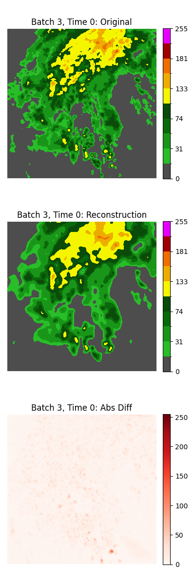
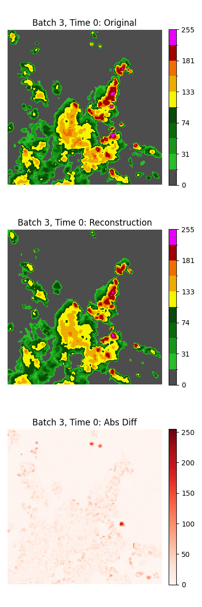
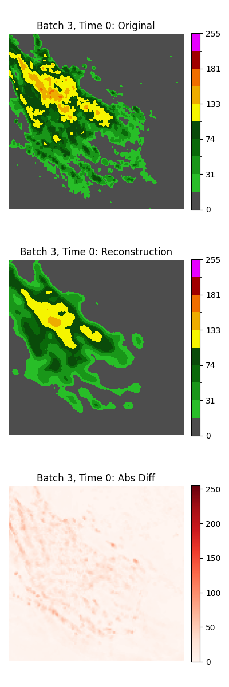
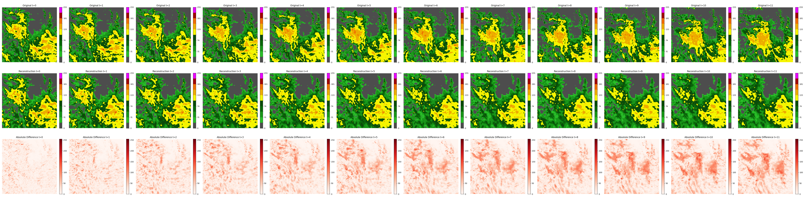

Weather Forecasting Framework
This repository documents experiments in spatio-temporal weather forecasting. It provides a modular framework for rapid prototyping and comparison of deep learning models that predict future weather frames from radar data.
Key Features
- Modular Design: Swap encoders, decoders, and predictors easily.
- Experiment Tracking: Integrated with Weights & Biases (W&B) for metrics, hyperparameters, and visualizations.
- Data Handling: Utilities for handling complex datasets such as SEVIR.
- Model Architectures: Includes implementations of Convolutional Autoencoders (AEs), Vision Transformers (ViTs), and GAN-based approaches.
Core Research Questions
Two competing philosophies were tested for latent space forecasting:
Path A: Extreme Compression to 1D
- Compress radar frames into a single vector.
- Enables simple forecasting models (e.g., Linear layers, LSTMs).
Path B: Structured Latent Space Forecasting
- Use an autoencoder to reduce dimensionality without discarding spatial structure.
- Requires more complex forecasting models that operate directly on structured representations.
Experiment Log and Findings
Path A: The Quest for a 1D Latent Vector Bottleneck
Experiment 1: Custom Convolutional Autoencoder
- Compressed frames into a 2048-dimensional vector.
- Reconstructions were acceptable, but adding a GAN objective caused instability and overfitting.
- W&B Runs: Baseline (
x46uqcr0), GAN attempt (t6n7v9ad).
Experiment 2: ViT with Token Aggregation
- Collapsed patch tokens (via cross-attention) into one latent vector.
- Result: Severe loss of spatial information → blurry reconstructions.
- W&B Run:
qt1yyhwg.
|  |  |  |
| Autoencoder (smooth) | AE + GAN (crisper due to discriminator) | ViT AE (over-smoothed, detail loss) |
Conclusion: Extreme compression into a single vector creates an information bottleneck. Critical spatial detail is lost, preventing accurate reconstructions and forecasts.
Path B: Forecasting on Structured Latent Representations
Experiment 1: ViT with Token Sequence Latent Space
Used the full sequence of patch tokens (
[64, 512]) as latent representation.Encountered training instability:
- Vanishing gradients (pure Transformer & hybrids).
- Adding a discriminator caused gradient explosions.
W&B Runs: Vanishing (
99n8g228), Exploding (0w7p677t).
Experiment 2: Forecasting in Pre-trained Encoder Latent Space
- Used a stable pre-trained autoencoder with a structured latent space.
- Trained a linear model to predict future latent states.
- Result: Forecasts outperformed persistence baseline.
- Attempting further compression → major information loss (consistent with Path A).
- W&B Run:
jsi9uhlw.

Conclusion: Preserving structured latent spaces enables meaningful forecasting. The challenge is no longer compression, but building strong spatio-temporal forecasters on structured representations.
Overall Conclusion
Path A (1D vector) → Dead End
- Consistently loses critical spatial details.
- Blurry reconstructions, poor forecasts.
Path B (Structured latent space) → Promising
- Retains spatio-temporal structure.
- Linear models can already outperform simple baselines.
- Unlocks potential for advanced forecasting architectures.
Future Direction: Hybrid Approach with Physical Priors
The most promising next step combines structured latent forecasting with physical knowledge.
Decompose the Problem
- Model large-scale advection (motion) separately from local diffusion (growth/decay).
Integrate Physical Priors
- Apply soft regularizers from physics (e.g., advection-diffusion equation).
- Ensure forecasts are physically plausible.
Use Strong Backbones
- Adopt advanced spatio-temporal architectures like Earthformer.
- Proven superior to U-Net style networks in atmospheric modeling.
More Details
See full logs, charts, and analysis on W&B: 👉 Experiment Dashboard